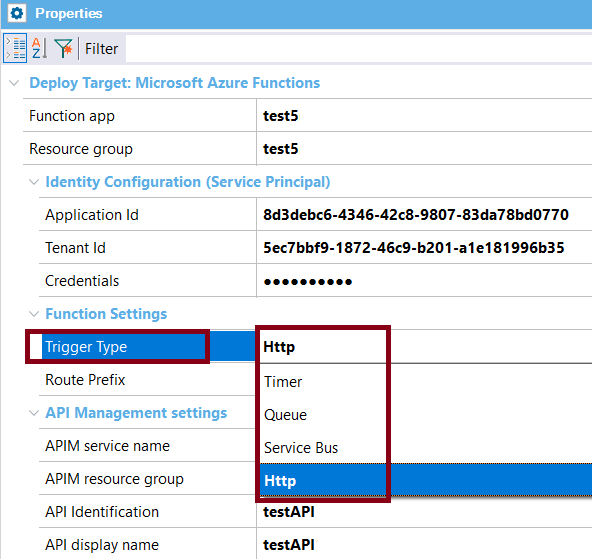
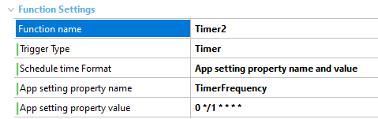
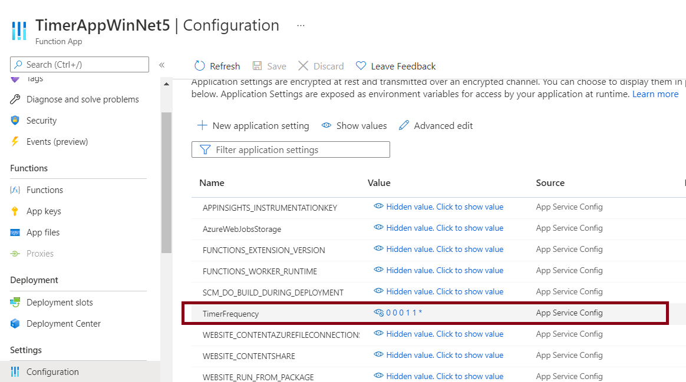

This document explains how to deploy a GeneXus application as Azure Functions.
Install the requirements in the machine where you will run the deployment —you only need Azure CLI (version 2.27.1).
Otherwise, the deployment throws the error: 'az' is not recognized as an internal or external command, operable program, or batch file.
Note: Azure CLI 2.29 throws an error ('str' object has no attribute 'value').
The basic steps in the cloud are as follows:
The basic steps in GeneXus are as follows:
Azure functions have Trigger Types (Trigger Type property at the deployment unit).

Depending on the trigger type of the functions, you have to consider different aspects when deploying.
To consider those aspects, you may group the functions that have a trigger other than Http, and those that have Http trigger.
For all the functions except those that have Http trigger, consider the following to deploy the application.
See Azure Http-triggered functions
First, take into account that when the function is published on an existing function app, the function is updated.
Depending on the function, it is preferable to be able to change some settings in the cloud. Those settings are configured at deployment time, and you can set the deployment engine to create an application setting in the cloud with the name and value you specify.
For example, for timer functions, you can specify a cron time, or an application setting (to be created in the cloud with the name and value that you wish).

For the last option, the advantage is that all changes can be made in the cloud (you don't need to deploy again for those changes).

The same happens with other function types like Queue or Service Bus, where the connection data is defined as an app setting.
The behavior of all functions within the function app can be configured globally. This is done in the host.json file. For example, in that file, you can configure the trace level for the app, Health Monitor, etc.
Azure functions have a default timeout, which can also be changed at the host.json file.
Important: The GeneXus user has to manage this file.
The Application Deployment Tool uploads one with the basic settings, but if you want to use another you can edit it and add it to the deployment unit (see here).
{
"version": "2.0",
"logging": {
"fileLoggingMode": "always",
"logLevel": {
"default": "Trace",
"Host.Results": "Trace",
"Function": "Trace",
"Host.Aggregator": "Trace"
},
"applicationInsights": {
"samplingExcludedTypes": "Request",
"samplingSettings": {
"isEnabled": true
}
}
}
}
If the function app uses Image, Audio, Video, or BlobFile data types, you have to configure the Storage Provider property because all multimedia must be served from an external URL, such as Microsoft Azure.
For the same reason, it's not supported to use the file system to serve content; that is, to have read/write access to files (such as Blob data type, Excel, or PDF reports).